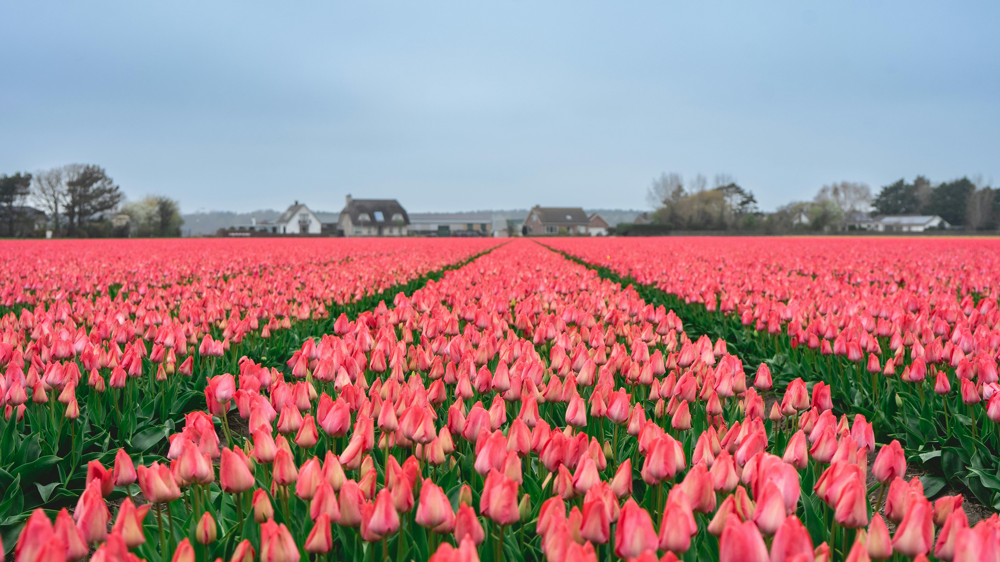

The one with the flowers.
Spring Overview
Spring is defined as the season between winter and summer during which the temperatures gradually rise. In the northern hemisphere Spring usually lasts from March until around mid June. It is the savior from a cold winter that feels like it will never end, spring appears like a deep flowing river in the middle of large desert. This is the time of year when the birds begin to chirp, the flowers are begining to bloom and life returns after winter.With the new life however comes the pollen and seasonal allergies. The congestion and the sneezing.
During spring many flowers and other flora begin to bloom, coming out of their winter states. Because of this spring is filled with bright arays of color ranging from reds and pinks to blues and purples. During spring, it is becoming more and more popular to visit tulip fields and other flower fields where you get to pick your own flowers as well as take breathtaking photos. There's also you-pick fruit farms to pick from as well if you would rather pick a type of berry rather than flowers.
Holidays
Spring has some holidays including St.Patrick's Day, April Fool's Day, Easter, Star Wars Day, Mother's Day, etc.. However none of the holidays that spring currently boasts stand out as obvious bonus points in the competition for best season.
Easter
Although originally a holiday rooted in Cristianity, now Easter has come to include more than just your standard church services and religious practices. Families gather for a nice meal and spend time with one another; and if you're lucky enough, you may even receive a visit from the Easter Bunny himself. The Easter bunny leaves behind hidden eggs for the kids to find during the Easter egg hunt. The eggs can contain anything from candy to small toys and even money. Leading up to Easter, kids can even dye their own easter eggs, drawing patterns and changing the color of the egg's shell.
St.Patrick's Day
St.Patrick's Day, agueably more green than Earth day (literally). St.Patrick's Day has been celebrated by the Irish on March 17 for over 1000 years. The day comemerates the death of St.Patrick. Because the day falls in the middle of Lent, traditonally the Irish would attend church in the morning and then the rules of Lent would be waived in the evening allowing them to feast on meat and drink.

For context as to why St.Patrick himself is important to the Irish people. St.Patrick is the patron Saint of Ireland. He lived during the fifth century; born in Britain he was taken to Ireland at 16 as a slave. St.Patrick managed to escape slavery but returned to Ireland and is credited with converting the people of Ireland to Christianity. He evn used a shamrock to explain the Holy Trinity (Father, Son, and Holy Spirit). Although he was important to the Irish people, the first St.Patrick's day celebration was held in a Spanish Colony in 1601 in what is now present day St.Augustine, Florida. The growing population of Irish immigrants participating in the celebrations in the United States during the Irish potatoe famine would become known as "The Green Machine", from there the assosiation of green and St.Patrick's day would only continue to grow to the 1960's when Chicago started dying the river green in honor of the day; as well as the tradition of pinching those who don't where green on St.Patrick's day.
Is Spring the best season?
No. Although I like spring and the rainy weather that it brings, I don't appreciate the seasonal allergies and not being able to go more than 20 minutes without sneezing. There's really isn't much negative to say about spring, it is simply boring, there is nothing that makes it stand out from the pack while other seasons have features or holidays that set them apart more than what spring.